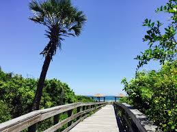

Coaching Softball
Hobby Number One
My first hobby is coaching softball. I have always enjoyed playing softball, so coaching softball is also a hobby and a passion of mine.
This year I am helping coach at the middle school I teach at, so I am very excited about the opporunity and this upcoming season.
Camping with Family
Hobby Two
A second hobby I enjoy is camping with my husband and daughter. She enjoys walking on the trails as we push her in the wagon. One of our favorite campgrounds is in Florida right across the road from the beach. I am going to include a park map for the campground, and a picture of the beach there also.
This is an idea of our accomodations usually when we camp.

This is a park map of one of our favorite campgrounds. You are able to see all of the different walking and biking trails in addition to the all the other activities they have available.

Taking a stroll with my daughter and husband.
Riding Bicycles
Hobby Three
A third hobby of interest for me is riding bicycles. I enjoy riding bicycles and pulling my daughter in the her little trailer behind the bike.

Picture of my husband as we rode around the camprgound. The weather was nice with a slight breeze because we were so close to the beach.
